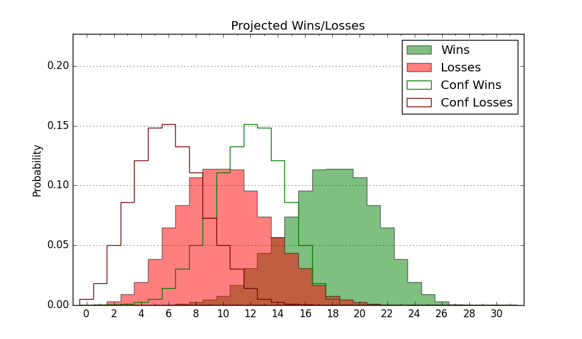

| Home | Game Probabilities | Conferences | Preseason Predictions | Odds Charts | NCAA Tournament |
| City: | Phoenix, Arizona | |
| Conference: | Western (1st)
| |
| Record: | 0-0 (Conf) 1-1 (Overall) | |
| Ratings: | Comp.: 5.7 (104th) Net: -5.8 (218th) Off: 87.7 (299th) Def: 93.5 (108th) SoR: 13.0 (139th) |
| Remaining | ||||||
|---|---|---|---|---|---|---|
| Date | Opponent | Win Prob | Pred. | |||
| 11/18 | Grambling St. (262) | 88.4% | W 73-59 | |||
| 11/21 | (N) Wichita St. (75) | 40.1% | L 62-65 | |||
| 11/26 | Pepperdine (165) | 78.1% | W 73-64 | |||
| 11/29 | Alcorn St. (207) | 83.0% | W 70-59 | |||
| 12/3 | @ Wyoming (66) | 24.0% | L 62-70 | |||
| 12/7 | Loyola Marymount (106) | 65.8% | W 70-66 | |||
| 12/10 | (N) North Texas (46) | 28.9% | L 56-61 | |||
| 12/20 | Idaho St. (295) | 90.6% | W 70-55 | |||
| 12/29 | California Baptist (264) | 88.7% | W 72-58 | |||
| 1/5 | @ Sam Houston St. (179) | 53.5% | W 64-63 | |||
| 1/7 | @ Stephen F. Austin (148) | 45.3% | L 67-68 | |||
| 1/12 | UT Arlington (269) | 89.0% | W 70-56 | |||
| 1/14 | @ California Baptist (264) | 69.7% | W 68-62 | |||
| 1/18 | Dixie St. (292) | 90.3% | W 76-61 | |||
| 1/21 | Utah Valley (143) | 73.2% | W 67-60 | |||
| 1/26 | @ Abilene Christian (156) | 47.2% | L 66-67 | |||
| 1/28 | @ Tarleton St. (192) | 54.7% | W 63-62 | |||
| 2/4 | Stephen F. Austin (148) | 73.8% | W 71-64 | |||
| 2/9 | New Mexico St. (154) | 74.7% | W 68-61 | |||
| 2/11 | @ Seattle (132) | 42.9% | L 64-66 | |||
| 2/15 | UT Rio Grande Valley (300) | 90.7% | W 79-63 | |||
| 2/17 | Abilene Christian (156) | 75.2% | W 71-63 | |||
| 2/22 | @ New Mexico St. (154) | 46.4% | L 64-65 | |||
| 2/24 | Seattle (132) | 71.9% | W 68-62 | |||
| 3/1 | @ Southern Utah (187) | 54.3% | W 70-68 | |||
| 3/3 | @ Dixie St. (292) | 73.3% | W 72-65 | |||
| Previous | Game Score | |||||
| Date | Opponent | Win Prob | Result | Off | Def | Net |
| 11/7 | Montana St. (149) | 73.9% | W 60-54 | -10.4 | 4.7 | -5.7 |
| 11/12 | @Nevada (107) | 36.4% | L 46-59 | -20.8 | 4.1 | -16.7 |
| Stats & Trends | |||||
|---|---|---|---|---|---|
| Current | Day | Week | Month | Season | |
| Composite | 5.7 | +0.0 | -1.1 | -1.3 | -1.3 |
| Comp Rank | 104 | -- | -8 | -9 | -9 |
| Net Efficiency | -5.8 | +0.0 | -5.0 | -- | -- |
| Net Rank | 218 | -- | -64 | -- | -- |
| Off Efficiency | 87.7 | +0.0 | -6.6 | -- | -- |
| Off Rank | 299 | -- | -101 | -- | -- |
| Def Efficiency | 93.5 | -0.0 | +1.6 | -- | -- |
| Def Rank | 108 | +2 | -2 | -- | -- |
| SoS Rank | 144 | -1 | +15 | -- | -- |
| Exp. Wins | 17.8 | -0.0 | -1.0 | -0.8 | -0.8 |
| Exp. Conf Wins | 11.9 | -0.0 | -0.4 | -0.4 | -0.4 |
| Conf Champ Prob | 29.7 | -0.6 | -5.4 | -5.5 | -5.5 |

| Advanced Stats | ||
|---|---|---|
| Stat | Value | Rank |
| Off Eff FG % | 0.419 | 313 |
| Off Ast Ratio | 0.117 | 264 |
| Off ORB% | 0.178 | 323 |
| Off TO Rate | 0.101 | 18 |
| Off FT Ratio | 0.315 | 214 |
| Def Eff FG % | 0.441 | 77 |
| Def Ast Ratio | 0.096 | 34 |
| Def ORB% | 0.220 | 91 |
| Def TO Rate | 0.117 | 332 |
| Def FT Ratio | 0.296 | 138 |